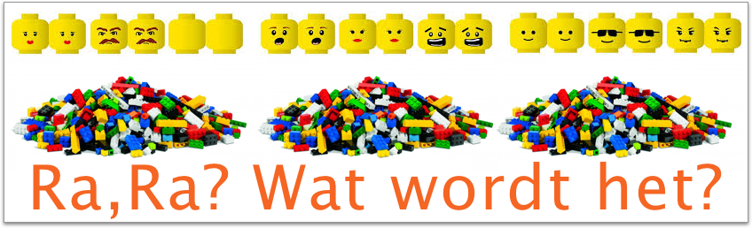

Jouw interesse voor Swift en actieve deelname aan SwiftDev.nl onderstreept onze gezamenlijke interesse en passie. Swift kent ontelbare mogelijkheden om kansrijke ideeën in apps om te zetten. Omdat het ontwikkelen van apps voor velen van ons een serieuze persoonlijke uitdaging blijkt, kan de welwillende hulp van anderen je enorm veel verder brengen. Je moet je altijd blijven beseffen dat jouw vragen, antwoorden én morele steun op ons forum ieders kennis, kunde én moreel in topconditie houdt.
Apps ontwikkelen is een steeds herhalend leerproces waar veel mensen bij betrokken zijn. Niet alleen ontwikkelaars, maar ook gebruikers, ontwerpers, testers en soms investeerders leveren hun bijdrage. Vooral samenwerking tussen deze belanghebbenden maakt het ontwikkelen van apps voor iedereen zo verschrikkelijk boeiend. Stap voor stap kom je steeds dichter bij weer het volgende tussenstation. Als ontwikkelaar leeft je te midden van een hele grote stapel bouwstenen die jij aan de behoeften van de gebruikers van jouw app omvormt. Hiervoor is veel kennis en kunde nodig die je ook samen kunt leren.
Leren is een werkwoord.
Bij uitstek op het gebied van programmeren geldt dat er heel veel verschillende wegen naar Rome leiden. Vooral in het begin valt er heel veel te leren en heb je nog onvoldoende ervaring om in alle gevallen de juiste aanpak te kiezen. Wat je van Swift moet kennen en kunnen hangt heel erg af van de aard en de functionaliteit van je app. Weest niet bevreesd, er is voldoende hulp binnen handbereik.
Swift werkt in Apple’s iOS met ontwerpprincipes zoals Model-View-Controller (MVC), delegatie en target-action. Principes die je helpen effectieve apps te bouwen. Wanneer je ze strikt toepast, functioneert jouw app beter en voldoet deze aan de hoge verwachtingen van inmiddels verwende gebruikers. Door deze ontwerpprincipes vanaf het begin effectief te leren toepassen, zal het ontwikkelen, onderhouden en uitbreiden van apps achteraf een heel stuk eenvoudiger maken. MVC laat je ervaren dat effectieve samenwerking tussen het ‘wat’ (model), ‘hoe’ (controller) en ‘waarmee’ (view) tot waanzinnige resultaten leiden. Wat soms ongelofelijk complex lijkt kan bij goed doordachte ontwerpen met een beperkt aantal leesbare regels code en gericht muizen voor de juiste objectverbindingen tot stand komen.
Wat in het begin in Playgrounds een allegaartje aan Swift codeblokken lijkt, verandert in Projecten al snel in onderling afhankelijke en samenwerkende objecten. Deze objecten gaan door interactie met gebruikers via onderlinge verbindingen en code met elkaar communiceren. Dit brengt de app tot leven. Als ontwikkelaar ben/word jij de vakman die deze magie tot stand brengt. Gebruikers zijn vaak verbaasd over het gemak waarmee zij hun smartphone kunnen bedienen. Swift code schrijven en apps bouwen komt niemand aanwaaien. Maar als het je is gelukt, geeft het jou en de gebruikers van jouw app een zeer voldaan gevoel.
Elke ontwikkelaar leert het meest van zijn fouten. Soms mis je elementaire kennis of heb je één van de vele vaardigheden nog niet voldoende onder de knie. Wie fouten maakt, zal ervaren dat app-ontwikkeling in Swift in alle gevallen je volledige aandacht vraagt. Want wat je bedenkt, werkt niet altijd in één keer. Fouten oplossen is een belangrijk onderdeel van je ontdekkingsreis om Swift en alle objecten goed te laten samenwerken. Onverdeelde aandacht en voldoende tijd om hetgeen je geleerd hebt ook echt in de praktijk te brengen zorgen voor een effectief leerproces.
Leren om te leren!
Omdat het maken van fouten je soms enorm ontmoedigt, is het essentieel je te verdiepen in welke aanpak effectief voor jou werkt. Iedereen heeft namelijk een eigen leerstijl. Sommigen leren het beste uit boeken, anderen gebruiken videotrainingen of gaan zelf aan de gang. Soms is er de mogelijkheid een klassikale cursus te volgen met een echte ervaren leraar die je zo de kneepjes van het vak uitlegt. Dit zijn allemaal kleine opstapjes naar het zelfstandig kunnen ontwikkelen van Swift apps.
Echt apps leren bouwen vraagt om een actieve houding bij het vergaren van kennis en vaardigheden. In het begin is je theoretische kennis van levensbelang. Daarom is actief leren en zelf (direct) proberen een zeer effectieve methode om je de essentiële kennis en kunde eigen te maken. Als je de theorie begrijpt, kun je deze in de praktijk leren brengen. Zo groei je er langzaam maar zeker in.
Veel (nog niet) leden van SwiftDev.nl herkennen zich in het bovenstaande. Wanneer jouw aanpak op het gebied van programmeren in Swift of het ontwikkelen van apps nog niet tot gewenste resultaten heeft geleid, is actieve deelname aan SwiftDev.nl voor jou dan een verstandige beslissing? Beantwoord je deze vraag met ‘Ja’, doe vandaag dan nog met ons mee! Je zult er absoluut geen spijt van krijgen!